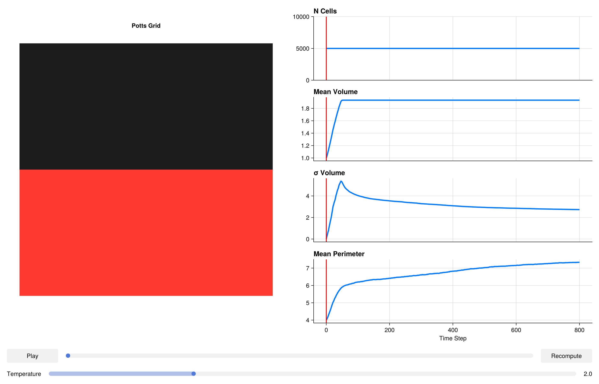

using CairoMakie
CairoMakie.activate!()Epithelial Sheet & Tissue Mechanics
Epithelial monolayers are the fundamental structural unit of organs such as the gut, skin, and lung. Their mechanical properties — stiffness, cohesion, and resistance to shear — emerge from the interplay between cell-cell adhesion and cytoskeletal tension. A widely used theoretical framework for epithelial mechanics is the vertex model, but the Potts captures similar physics at the level of individual lattice sites, making it straightforward to model irregular cell shapes and topological rearrangements (T1/T2 transitions) without explicit bookkeeping.
In this tutorial we tile a 150 × 150 grid with epithelial cells and demonstrate how SurfaceAreaComponent combined with VolumeComponent produces a mechanically stable sheet where cells resist both compression and stretching.
Packages
using PottsToolkit
using MakiePotts
using Statistics: mean, stdCell Types
A single epithelial cell type plus the background medium.
Epithelial = CellType(:Epithelial)
Medium = CellType(:Medium, is_background = true)CellType(:Medium, true)Energy Model — Volume, Surface Area, and Adhesion
Three components define the mechanical energy of an epithelial sheet:
VolumeComponent: incompressibility — cells resist area changes with stiffness λ_V = 5.0. Target volume ≈ 100 sites ≈ a 10×10 pixel cell.
SurfaceAreaComponent: cortical tension — penalises deviation of the cell perimeter from the target value. λS = 1.0 is kept lower than λV to allow cell shape fluctuations while maintaining overall area. A target perimeter of 40 corresponds to a roughly circular cell of area 100.
AdhesionComponent: cell-cell stickiness. Low J(Epithelial,Epithelial) relative to J(Epithelial,Medium) ensures that cells prefer to be in contact with each other, forming the coherent sheet. If J(cell,cell) were made larger, the sheet would fragment into isolated rounded-up cells.
sys = PottsSystem(
cell_types = [Medium, Epithelial],
penalties = [
VolumeComponent(
Epithelial => (λ = 5.0f0, target = 100),
),
SurfaceAreaComponent(
Epithelial => (λ = 1.0f0, target = 40),
),
AdhesionComponent(
(Epithelial, Epithelial) => 3.0f0,
(Epithelial, Medium) => 18.0f0
)
]
)PottsSystem{Tuple{VolumeComponent{Rigid}, SurfaceAreaComponent{Rigid}, AdhesionComponent{Rigid, false}}, Tuple{}}(CellType[CellType(:Medium, true), CellType(:Epithelial, false)], (VolumeComponent{Rigid}(Dict{CellType, @NamedTuple{target::Float32, λ::Float32}}(CellType(:Epithelial, false) => (target = 100.0, λ = 5.0))), SurfaceAreaComponent{Rigid}(Dict{CellType, @NamedTuple{target::Float32, λ::Float32}}(CellType(:Epithelial, false) => (target = 40.0, λ = 1.0)), 1.0f0), AdhesionComponent{Rigid, false}(Dict{Tuple{CellType, CellType}, Float32}((CellType(:Medium, true), CellType(:Epithelial, false)) => 18.0, (CellType(:Epithelial, false), CellType(:Epithelial, false)) => 3.0))), (), 10)Problem — Dense Monolayer
We initialise the sheet covering exactly the bottom half of a 100 × 100 grid using RectangleLayout. This perfectly sets up a scratch wound assay, where the cells collectively migrate upwards to fill the empty space.
prob = PottsProblem(
sys,
RectangleLayout(Epithelial, (1, 1), (100, 50)),
(100, 100);
tspan = (0, 800),
topology = VonNeumannTopology{2}()
)
alg = CheckerboardMetropolis(T = 2.0f0, sweeps_per_step = 10)
sol = solve(prob, alg; saveat = 8)retcode: Success
Interpolation: No interpolation
t: 101-element Vector{Int64}:
0
8
16
24
32
40
48
56
64
72
⋮
736
744
752
760
768
776
784
792
800
u: 101-element Vector{Any}:
(grid = UInt32[0x00000001 0x00000065 … 0x00000000 0x00000000; 0x00000002 0x00000066 … 0x00000000 0x00000000; … ; 0x00000063 0x000000c7 … 0x00000000 0x00000000; 0x00000064 0x000000c8 … 0x00000000 0x00000000], cell_data = @NamedTuple{volumes::Int32, target_volumes::Int32, cell_types::UInt8, target_surface_areas::Int32, surface_areas::Int32, tensions::Float32}[(volumes = 1, target_volumes = 100, cell_types = 0x01, target_surface_areas = 40, surface_areas = 4, tensions = 0.0), (volumes = 1, target_volumes = 100, cell_types = 0x01, target_surface_areas = 40, surface_areas = 4, tensions = 0.0), (volumes = 1, target_volumes = 100, cell_types = 0x01, target_surface_areas = 40, surface_areas = 4, tensions = 0.0), (volumes = 1, target_volumes = 100, cell_types = 0x01, target_surface_areas = 40, surface_areas = 4, tensions = 0.0), (volumes = 1, target_volumes = 100, cell_types = 0x01, target_surface_areas = 40, surface_areas = 4, tensions = 0.0), (volumes = 1, target_volumes = 100, cell_types = 0x01, target_surface_areas = 40, surface_areas = 4, tensions = 0.0), (volumes = 1, target_volumes = 100, cell_types = 0x01, target_surface_areas = 40, surface_areas = 4, tensions = 0.0), (volumes = 1, target_volumes = 100, cell_types = 0x01, target_surface_areas = 40, surface_areas = 4, tensions = 0.0), (volumes = 1, target_volumes = 100, cell_types = 0x01, target_surface_areas = 40, surface_areas = 4, tensions = 0.0), (volumes = 1, target_volumes = 100, cell_types = 0x01, target_surface_areas = 40, surface_areas = 4, tensions = 0.0) … (volumes = 1, target_volumes = 100, cell_types = 0x01, target_surface_areas = 40, surface_areas = 4, tensions = 0.0), (volumes = 1, target_volumes = 100, cell_types = 0x01, target_surface_areas = 40, surface_areas = 4, tensions = 0.0), (volumes = 1, target_volumes = 100, cell_types = 0x01, target_surface_areas = 40, surface_areas = 4, tensions = 0.0), (volumes = 1, target_volumes = 100, cell_types = 0x01, target_surface_areas = 40, surface_areas = 4, tensions = 0.0), (volumes = 1, target_volumes = 100, cell_types = 0x01, target_surface_areas = 40, surface_areas = 4, tensions = 0.0), (volumes = 1, target_volumes = 100, cell_types = 0x01, target_surface_areas = 40, surface_areas = 4, tensions = 0.0), (volumes = 1, target_volumes = 100, cell_types = 0x01, target_surface_areas = 40, surface_areas = 4, tensions = 0.0), (volumes = 1, target_volumes = 100, cell_types = 0x01, target_surface_areas = 40, surface_areas = 4, tensions = 0.0), (volumes = 1, target_volumes = 100, cell_types = 0x01, target_surface_areas = 40, surface_areas = 4, tensions = 0.0), (volumes = 1, target_volumes = 100, cell_types = 0x01, target_surface_areas = 40, surface_areas = 4, tensions = 0.0)], N_cells = Base.RefValue{Int64}(5000))
(grid = UInt32[0x000000c8 0x000000c8 … 0x00000000 0x00000001; 0x00000065 0x00000066 … 0x00000002 0x00000066; … ; 0x000000c7 0x000000c6 … 0x00000064 0x00000063; 0x00000065 0x0000012c … 0x00000001 0x00000064], cell_data = @NamedTuple{volumes::Int32, target_volumes::Int32, cell_types::UInt8, target_surface_areas::Int32, surface_areas::Int32, tensions::Float32}[(volumes = 4, target_volumes = 100, cell_types = 0x01, target_surface_areas = 40, surface_areas = 12, tensions = -52.36992), (volumes = 2, target_volumes = 100, cell_types = 0x01, target_surface_areas = 40, surface_areas = 8, tensions = -60.726803), (volumes = 2, target_volumes = 100, cell_types = 0x01, target_surface_areas = 40, surface_areas = 8, tensions = -63.973087), (volumes = 4, target_volumes = 100, cell_types = 0x01, target_surface_areas = 40, surface_areas = 12, tensions = -54.842056), (volumes = 4, target_volumes = 100, cell_types = 0x01, target_surface_areas = 40, surface_areas = 10, tensions = -57.98515), (volumes = 11, target_volumes = 100, cell_types = 0x01, target_surface_areas = 40, surface_areas = 18, tensions = -39.399643), (volumes = 3, target_volumes = 100, cell_types = 0x01, target_surface_areas = 40, surface_areas = 10, tensions = -57.03864), (volumes = 2, target_volumes = 100, cell_types = 0x01, target_surface_areas = 40, surface_areas = 8, tensions = -64.445206), (volumes = 1, target_volumes = 100, cell_types = 0x01, target_surface_areas = 40, surface_areas = 4, tensions = -73.27891), (volumes = 2, target_volumes = 100, cell_types = 0x01, target_surface_areas = 40, surface_areas = 6, tensions = -70.44438) … (volumes = 1, target_volumes = 100, cell_types = 0x01, target_surface_areas = 40, surface_areas = 4, tensions = -71.55837), (volumes = 1, target_volumes = 100, cell_types = 0x01, target_surface_areas = 40, surface_areas = 4, tensions = -77.47194), (volumes = 18, target_volumes = 100, cell_types = 0x01, target_surface_areas = 40, surface_areas = 36, tensions = -11.654755), (volumes = 6, target_volumes = 100, cell_types = 0x01, target_surface_areas = 40, surface_areas = 16, tensions = -48.501743), (volumes = 1, target_volumes = 100, cell_types = 0x01, target_surface_areas = 40, surface_areas = 4, tensions = -73.537865), (volumes = 1, target_volumes = 100, cell_types = 0x01, target_surface_areas = 40, surface_areas = 4, tensions = -72.82731), (volumes = 1, target_volumes = 100, cell_types = 0x01, target_surface_areas = 40, surface_areas = 4, tensions = -68.4348), (volumes = 1, target_volumes = 100, cell_types = 0x01, target_surface_areas = 40, surface_areas = 4, tensions = -72.03886), (volumes = 10, target_volumes = 100, cell_types = 0x01, target_surface_areas = 40, surface_areas = 26, tensions = -31.215538), (volumes = 5, target_volumes = 100, cell_types = 0x01, target_surface_areas = 40, surface_areas = 14, tensions = -54.403225)], N_cells = Base.RefValue{Int64}(5000))
(grid = UInt32[0x000000c8 0x000000c9 … 0x00000001 0x00000065; 0x00000066 0x00000067 … 0x00000065 0x000000c8; … ; 0x000000c7 0x000000c7 … 0x00000062 0x00000063; 0x00000065 0x0000012c … 0x00000001 0x00000064], cell_data = @NamedTuple{volumes::Int32, target_volumes::Int32, cell_types::UInt8, target_surface_areas::Int32, surface_areas::Int32, tensions::Float32}[(volumes = 7, target_volumes = 100, cell_types = 0x01, target_surface_areas = 40, surface_areas = 16, tensions = -52.9395), (volumes = 6, target_volumes = 100, cell_types = 0x01, target_surface_areas = 40, surface_areas = 16, tensions = -47.037636), (volumes = 4, target_volumes = 100, cell_types = 0x01, target_surface_areas = 40, surface_areas = 12, tensions = -54.976112), (volumes = 12, target_volumes = 100, cell_types = 0x01, target_surface_areas = 40, surface_areas = 28, tensions = -23.82993), (volumes = 9, target_volumes = 100, cell_types = 0x01, target_surface_areas = 40, surface_areas = 24, tensions = -34.765266), (volumes = 25, target_volumes = 100, cell_types = 0x01, target_surface_areas = 40, surface_areas = 48, tensions = 20.192558), (volumes = 4, target_volumes = 100, cell_types = 0x01, target_surface_areas = 40, surface_areas = 12, tensions = -54.574444), (volumes = 10, target_volumes = 100, cell_types = 0x01, target_surface_areas = 40, surface_areas = 20, tensions = -39.0276), (volumes = 4, target_volumes = 100, cell_types = 0x01, target_surface_areas = 40, surface_areas = 10, tensions = -58.37098), (volumes = 2, target_volumes = 100, cell_types = 0x01, target_surface_areas = 40, surface_areas = 8, tensions = -63.881367) … (volumes = 1, target_volumes = 100, cell_types = 0x01, target_surface_areas = 40, surface_areas = 4, tensions = -73.57229), (volumes = 1, target_volumes = 100, cell_types = 0x01, target_surface_areas = 40, surface_areas = 4, tensions = -71.99142), (volumes = 32, target_volumes = 100, cell_types = 0x01, target_surface_areas = 40, surface_areas = 56, tensions = 28.610123), (volumes = 15, target_volumes = 100, cell_types = 0x01, target_surface_areas = 40, surface_areas = 34, tensions = -15.742296), (volumes = 7, target_volumes = 100, cell_types = 0x01, target_surface_areas = 40, surface_areas = 16, tensions = -55.726818), (volumes = 1, target_volumes = 100, cell_types = 0x01, target_surface_areas = 40, surface_areas = 4, tensions = -72.92834), (volumes = 2, target_volumes = 100, cell_types = 0x01, target_surface_areas = 40, surface_areas = 6, tensions = -70.4485), (volumes = 2, target_volumes = 100, cell_types = 0x01, target_surface_areas = 40, surface_areas = 6, tensions = -63.869938), (volumes = 12, target_volumes = 100, cell_types = 0x01, target_surface_areas = 40, surface_areas = 34, tensions = -10.683536), (volumes = 16, target_volumes = 100, cell_types = 0x01, target_surface_areas = 40, surface_areas = 34, tensions = -11.240756)], N_cells = Base.RefValue{Int64}(5000))
(grid = UInt32[0x000000c8 0x000000c9 … 0x00000064 0x00000065; 0x00000066 0x00000067 … 0x00000065 0x000000c8; … ; 0x0000018f 0x000000c6 … 0x00000062 0x00000063; 0x00000065 0x0000012c … 0x00000062 0x00000064], cell_data = @NamedTuple{volumes::Int32, target_volumes::Int32, cell_types::UInt8, target_surface_areas::Int32, surface_areas::Int32, tensions::Float32}[(volumes = 11, target_volumes = 100, cell_types = 0x01, target_surface_areas = 40, surface_areas = 30, tensions = -18.720842), (volumes = 11, target_volumes = 100, cell_types = 0x01, target_surface_areas = 40, surface_areas = 32, tensions = -13.51506), (volumes = 3, target_volumes = 100, cell_types = 0x01, target_surface_areas = 40, surface_areas = 10, tensions = -57.594246), (volumes = 20, target_volumes = 100, cell_types = 0x01, target_surface_areas = 40, surface_areas = 38, tensions = -3.4709492), (volumes = 13, target_volumes = 100, cell_types = 0x01, target_surface_areas = 40, surface_areas = 32, tensions = -17.131947), (volumes = 57, target_volumes = 100, cell_types = 0x01, target_surface_areas = 40, surface_areas = 98, tensions = 111.18357), (volumes = 5, target_volumes = 100, cell_types = 0x01, target_surface_areas = 40, surface_areas = 16, tensions = -49.93151), (volumes = 13, target_volumes = 100, cell_types = 0x01, target_surface_areas = 40, surface_areas = 36, tensions = -10.317825), (volumes = 2, target_volumes = 100, cell_types = 0x01, target_surface_areas = 40, surface_areas = 8, tensions = -62.60955), (volumes = 3, target_volumes = 100, cell_types = 0x01, target_surface_areas = 40, surface_areas = 12, tensions = -52.87594) … (volumes = 2, target_volumes = 100, cell_types = 0x01, target_surface_areas = 40, surface_areas = 6, tensions = -69.87406), (volumes = 2, target_volumes = 100, cell_types = 0x01, target_surface_areas = 40, surface_areas = 6, tensions = -69.70431), (volumes = 51, target_volumes = 100, cell_types = 0x01, target_surface_areas = 40, surface_areas = 80, tensions = 76.66427), (volumes = 20, target_volumes = 100, cell_types = 0x01, target_surface_areas = 40, surface_areas = 38, tensions = -8.7578), (volumes = 10, target_volumes = 100, cell_types = 0x01, target_surface_areas = 40, surface_areas = 24, tensions = -30.432203), (volumes = 2, target_volumes = 100, cell_types = 0x01, target_surface_areas = 40, surface_areas = 6, tensions = -65.97304), (volumes = 1, target_volumes = 100, cell_types = 0x01, target_surface_areas = 40, surface_areas = 4, tensions = -72.79511), (volumes = 1, target_volumes = 100, cell_types = 0x01, target_surface_areas = 40, surface_areas = 4, tensions = -71.792816), (volumes = 12, target_volumes = 100, cell_types = 0x01, target_surface_areas = 40, surface_areas = 34, tensions = -10.583485), (volumes = 24, target_volumes = 100, cell_types = 0x01, target_surface_areas = 40, surface_areas = 52, tensions = 19.691872)], N_cells = Base.RefValue{Int64}(5000))
(grid = UInt32[0x000000c8 0x000000c9 … 0x00000064 0x00000065; 0x00000066 0x00000067 … 0x00000065 0x000000c8; … ; 0x000000c6 0x0000018f … 0x00000062 0x00000063; 0x00000065 0x00000190 … 0x00000063 0x00000064], cell_data = @NamedTuple{volumes::Int32, target_volumes::Int32, cell_types::UInt8, target_surface_areas::Int32, surface_areas::Int32, tensions::Float32}[(volumes = 14, target_volumes = 100, cell_types = 0x01, target_surface_areas = 40, surface_areas = 34, tensions = -12.845939), (volumes = 23, target_volumes = 100, cell_types = 0x01, target_surface_areas = 40, surface_areas = 56, tensions = 30.989285), (volumes = 3, target_volumes = 100, cell_types = 0x01, target_surface_areas = 40, surface_areas = 10, tensions = -58.77056), (volumes = 27, target_volumes = 100, cell_types = 0x01, target_surface_areas = 40, surface_areas = 50, tensions = 21.879704), (volumes = 17, target_volumes = 100, cell_types = 0x01, target_surface_areas = 40, surface_areas = 44, tensions = 7.520651), (volumes = 69, target_volumes = 100, cell_types = 0x01, target_surface_areas = 40, surface_areas = 104, tensions = 128.88893), (volumes = 5, target_volumes = 100, cell_types = 0x01, target_surface_areas = 40, surface_areas = 16, tensions = -48.976315), (volumes = 18, target_volumes = 100, cell_types = 0x01, target_surface_areas = 40, surface_areas = 42, tensions = -0.545089), (volumes = 2, target_volumes = 100, cell_types = 0x01, target_surface_areas = 40, surface_areas = 8, tensions = -64.240814), (volumes = 4, target_volumes = 100, cell_types = 0x01, target_surface_areas = 40, surface_areas = 12, tensions = -51.96169) … (volumes = 1, target_volumes = 100, cell_types = 0x01, target_surface_areas = 40, surface_areas = 4, tensions = -75.16459), (volumes = 2, target_volumes = 100, cell_types = 0x01, target_surface_areas = 40, surface_areas = 6, tensions = -67.3684), (volumes = 70, target_volumes = 100, cell_types = 0x01, target_surface_areas = 40, surface_areas = 100, tensions = 117.46404), (volumes = 16, target_volumes = 100, cell_types = 0x01, target_surface_areas = 40, surface_areas = 44, tensions = 7.0204754), (volumes = 13, target_volumes = 100, cell_types = 0x01, target_surface_areas = 40, surface_areas = 32, tensions = -20.719053), (volumes = 1, target_volumes = 100, cell_types = 0x01, target_surface_areas = 40, surface_areas = 4, tensions = -71.21654), (volumes = 2, target_volumes = 100, cell_types = 0x01, target_surface_areas = 40, surface_areas = 6, tensions = -63.797474), (volumes = 1, target_volumes = 100, cell_types = 0x01, target_surface_areas = 40, surface_areas = 4, tensions = -72.60702), (volumes = 17, target_volumes = 100, cell_types = 0x01, target_surface_areas = 40, surface_areas = 46, tensions = 12.331666), (volumes = 38, target_volumes = 100, cell_types = 0x01, target_surface_areas = 40, surface_areas = 68, tensions = 59.158726)], N_cells = Base.RefValue{Int64}(5000))
(grid = UInt32[0x000000c8 0x000000c9 … 0x00000064 0x00000065; 0x00000066 0x00000067 … 0x00000065 0x000000c8; … ; 0x0000012c 0x000000c6 … 0x00000062 0x00000063; 0x00000065 0x00000190 … 0x00000063 0x00000064], cell_data = @NamedTuple{volumes::Int32, target_volumes::Int32, cell_types::UInt8, target_surface_areas::Int32, surface_areas::Int32, tensions::Float32}[(volumes = 21, target_volumes = 100, cell_types = 0x01, target_surface_areas = 40, surface_areas = 40, tensions = -1.6830823), (volumes = 27, target_volumes = 100, cell_types = 0x01, target_surface_areas = 40, surface_areas = 60, tensions = 43.74481), (volumes = 3, target_volumes = 100, cell_types = 0x01, target_surface_areas = 40, surface_areas = 10, tensions = -58.997963), (volumes = 25, target_volumes = 100, cell_types = 0x01, target_surface_areas = 40, surface_areas = 54, tensions = 30.497812), (volumes = 31, target_volumes = 100, cell_types = 0x01, target_surface_areas = 40, surface_areas = 58, tensions = 37.31872), (volumes = 59, target_volumes = 100, cell_types = 0x01, target_surface_areas = 40, surface_areas = 112, tensions = 140.90013), (volumes = 6, target_volumes = 100, cell_types = 0x01, target_surface_areas = 40, surface_areas = 18, tensions = -47.555367), (volumes = 27, target_volumes = 100, cell_types = 0x01, target_surface_areas = 40, surface_areas = 54, tensions = 27.622345), (volumes = 2, target_volumes = 100, cell_types = 0x01, target_surface_areas = 40, surface_areas = 8, tensions = -64.03136), (volumes = 2, target_volumes = 100, cell_types = 0x01, target_surface_areas = 40, surface_areas = 8, tensions = -61.400898) … (volumes = 2, target_volumes = 100, cell_types = 0x01, target_surface_areas = 40, surface_areas = 8, tensions = -65.12298), (volumes = 1, target_volumes = 100, cell_types = 0x01, target_surface_areas = 40, surface_areas = 4, tensions = -67.5749), (volumes = 78, target_volumes = 100, cell_types = 0x01, target_surface_areas = 40, surface_areas = 102, tensions = 123.22498), (volumes = 21, target_volumes = 100, cell_types = 0x01, target_surface_areas = 40, surface_areas = 58, tensions = 35.73024), (volumes = 17, target_volumes = 100, cell_types = 0x01, target_surface_areas = 40, surface_areas = 40, tensions = -1.933533), (volumes = 1, target_volumes = 100, cell_types = 0x01, target_surface_areas = 40, surface_areas = 4, tensions = -70.83216), (volumes = 1, target_volumes = 100, cell_types = 0x01, target_surface_areas = 40, surface_areas = 4, tensions = -71.02114), (volumes = 1, target_volumes = 100, cell_types = 0x01, target_surface_areas = 40, surface_areas = 4, tensions = -70.67746), (volumes = 27, target_volumes = 100, cell_types = 0x01, target_surface_areas = 40, surface_areas = 50, tensions = 19.653461), (volumes = 55, target_volumes = 100, cell_types = 0x01, target_surface_areas = 40, surface_areas = 104, tensions = 127.907845)], N_cells = Base.RefValue{Int64}(5000))
(grid = UInt32[0x000000c8 0x000000c9 … 0x00000064 0x00000065; 0x00000066 0x00000067 … 0x00000065 0x000000c8; … ; 0x000000c6 0x0000012b … 0x00000062 0x00000063; 0x00000065 0x00000190 … 0x00000063 0x00000064], cell_data = @NamedTuple{volumes::Int32, target_volumes::Int32, cell_types::UInt8, target_surface_areas::Int32, surface_areas::Int32, tensions::Float32}[(volumes = 22, target_volumes = 100, cell_types = 0x01, target_surface_areas = 40, surface_areas = 40, tensions = -0.76220447), (volumes = 24, target_volumes = 100, cell_types = 0x01, target_surface_areas = 40, surface_areas = 58, tensions = 37.585926), (volumes = 3, target_volumes = 100, cell_types = 0x01, target_surface_areas = 40, surface_areas = 10, tensions = -64.04625), (volumes = 30, target_volumes = 100, cell_types = 0x01, target_surface_areas = 40, surface_areas = 56, tensions = 32.021877), (volumes = 32, target_volumes = 100, cell_types = 0x01, target_surface_areas = 40, surface_areas = 60, tensions = 43.277657), (volumes = 66, target_volumes = 100, cell_types = 0x01, target_surface_areas = 40, surface_areas = 116, tensions = 149.34499), (volumes = 7, target_volumes = 100, cell_types = 0x01, target_surface_areas = 40, surface_areas = 20, tensions = -39.900764), (volumes = 37, target_volumes = 100, cell_types = 0x01, target_surface_areas = 40, surface_areas = 64, tensions = 46.862133), (volumes = 2, target_volumes = 100, cell_types = 0x01, target_surface_areas = 40, surface_areas = 8, tensions = -66.64392), (volumes = 2, target_volumes = 100, cell_types = 0x01, target_surface_areas = 40, surface_areas = 8, tensions = -64.63216) … (volumes = 2, target_volumes = 100, cell_types = 0x01, target_surface_areas = 40, surface_areas = 8, tensions = -60.16928), (volumes = 1, target_volumes = 100, cell_types = 0x01, target_surface_areas = 40, surface_areas = 4, tensions = -73.21886), (volumes = 61, target_volumes = 100, cell_types = 0x01, target_surface_areas = 40, surface_areas = 94, tensions = 109.59934), (volumes = 18, target_volumes = 100, cell_types = 0x01, target_surface_areas = 40, surface_areas = 54, tensions = 26.755558), (volumes = 18, target_volumes = 100, cell_types = 0x01, target_surface_areas = 40, surface_areas = 44, tensions = 8.978509), (volumes = 1, target_volumes = 100, cell_types = 0x01, target_surface_areas = 40, surface_areas = 4, tensions = -70.0581), (volumes = 1, target_volumes = 100, cell_types = 0x01, target_surface_areas = 40, surface_areas = 4, tensions = -66.99337), (volumes = 1, target_volumes = 100, cell_types = 0x01, target_surface_areas = 40, surface_areas = 4, tensions = -73.50893), (volumes = 34, target_volumes = 100, cell_types = 0x01, target_surface_areas = 40, surface_areas = 58, tensions = 33.905655), (volumes = 65, target_volumes = 100, cell_types = 0x01, target_surface_areas = 40, surface_areas = 120, tensions = 156.95653)], N_cells = Base.RefValue{Int64}(5000))
(grid = UInt32[0x000000c8 0x000000c9 … 0x00000064 0x00000065; 0x00000066 0x00000067 … 0x00000065 0x000000c8; … ; 0x0000012c 0x000000c6 … 0x00000062 0x00000063; 0x00000065 0x00000190 … 0x00000063 0x00000064], cell_data = @NamedTuple{volumes::Int32, target_volumes::Int32, cell_types::UInt8, target_surface_areas::Int32, surface_areas::Int32, tensions::Float32}[(volumes = 23, target_volumes = 100, cell_types = 0x01, target_surface_areas = 40, surface_areas = 42, tensions = 7.172077), (volumes = 23, target_volumes = 100, cell_types = 0x01, target_surface_areas = 40, surface_areas = 60, tensions = 40.397224), (volumes = 3, target_volumes = 100, cell_types = 0x01, target_surface_areas = 40, surface_areas = 10, tensions = -61.77164), (volumes = 32, target_volumes = 100, cell_types = 0x01, target_surface_areas = 40, surface_areas = 56, tensions = 33.51435), (volumes = 37, target_volumes = 100, cell_types = 0x01, target_surface_areas = 40, surface_areas = 66, tensions = 47.945045), (volumes = 51, target_volumes = 100, cell_types = 0x01, target_surface_areas = 40, surface_areas = 112, tensions = 144.58101), (volumes = 7, target_volumes = 100, cell_types = 0x01, target_surface_areas = 40, surface_areas = 24, tensions = -30.145061), (volumes = 39, target_volumes = 100, cell_types = 0x01, target_surface_areas = 40, surface_areas = 66, tensions = 50.875065), (volumes = 3, target_volumes = 100, cell_types = 0x01, target_surface_areas = 40, surface_areas = 10, tensions = -59.252464), (volumes = 2, target_volumes = 100, cell_types = 0x01, target_surface_areas = 40, surface_areas = 8, tensions = -65.180756) … (volumes = 2, target_volumes = 100, cell_types = 0x01, target_surface_areas = 40, surface_areas = 8, tensions = -66.20986), (volumes = 2, target_volumes = 100, cell_types = 0x01, target_surface_areas = 40, surface_areas = 6, tensions = -66.697876), (volumes = 45, target_volumes = 100, cell_types = 0x01, target_surface_areas = 40, surface_areas = 88, tensions = 97.572975), (volumes = 21, target_volumes = 100, cell_types = 0x01, target_surface_areas = 40, surface_areas = 50, tensions = 23.053314), (volumes = 22, target_volumes = 100, cell_types = 0x01, target_surface_areas = 40, surface_areas = 42, tensions = 5.452918), (volumes = 1, target_volumes = 100, cell_types = 0x01, target_surface_areas = 40, surface_areas = 4, tensions = -73.76507), (volumes = 1, target_volumes = 100, cell_types = 0x01, target_surface_areas = 40, surface_areas = 4, tensions = -69.47384), (volumes = 1, target_volumes = 100, cell_types = 0x01, target_surface_areas = 40, surface_areas = 4, tensions = -71.833046), (volumes = 41, target_volumes = 100, cell_types = 0x01, target_surface_areas = 40, surface_areas = 56, tensions = 31.927835), (volumes = 50, target_volumes = 100, cell_types = 0x01, target_surface_areas = 40, surface_areas = 106, tensions = 136.1169)], N_cells = Base.RefValue{Int64}(5000))
(grid = UInt32[0x000000c8 0x000000c9 … 0x00000064 0x00000065; 0x00000066 0x00000067 … 0x00000065 0x000000c8; … ; 0x000000c6 0x0000012b … 0x00000062 0x00000063; 0x00000065 0x00000190 … 0x00000063 0x00000064], cell_data = @NamedTuple{volumes::Int32, target_volumes::Int32, cell_types::UInt8, target_surface_areas::Int32, surface_areas::Int32, tensions::Float32}[(volumes = 26, target_volumes = 100, cell_types = 0x01, target_surface_areas = 40, surface_areas = 50, tensions = 19.249964), (volumes = 23, target_volumes = 100, cell_types = 0x01, target_surface_areas = 40, surface_areas = 62, tensions = 44.28589), (volumes = 3, target_volumes = 100, cell_types = 0x01, target_surface_areas = 40, surface_areas = 10, tensions = -59.026455), (volumes = 32, target_volumes = 100, cell_types = 0x01, target_surface_areas = 40, surface_areas = 58, tensions = 35.67081), (volumes = 31, target_volumes = 100, cell_types = 0x01, target_surface_areas = 40, surface_areas = 62, tensions = 45.96379), (volumes = 45, target_volumes = 100, cell_types = 0x01, target_surface_areas = 40, surface_areas = 106, tensions = 131.66026), (volumes = 7, target_volumes = 100, cell_types = 0x01, target_surface_areas = 40, surface_areas = 24, tensions = -35.398575), (volumes = 34, target_volumes = 100, cell_types = 0x01, target_surface_areas = 40, surface_areas = 66, tensions = 53.79864), (volumes = 2, target_volumes = 100, cell_types = 0x01, target_surface_areas = 40, surface_areas = 8, tensions = -65.882515), (volumes = 3, target_volumes = 100, cell_types = 0x01, target_surface_areas = 40, surface_areas = 10, tensions = -60.27662) … (volumes = 2, target_volumes = 100, cell_types = 0x01, target_surface_areas = 40, surface_areas = 8, tensions = -64.845604), (volumes = 4, target_volumes = 100, cell_types = 0x01, target_surface_areas = 40, surface_areas = 10, tensions = -62.470814), (volumes = 39, target_volumes = 100, cell_types = 0x01, target_surface_areas = 40, surface_areas = 86, tensions = 91.87646), (volumes = 24, target_volumes = 100, cell_types = 0x01, target_surface_areas = 40, surface_areas = 54, tensions = 26.560213), (volumes = 24, target_volumes = 100, cell_types = 0x01, target_surface_areas = 40, surface_areas = 46, tensions = 12.2018175), (volumes = 1, target_volumes = 100, cell_types = 0x01, target_surface_areas = 40, surface_areas = 4, tensions = -70.3343), (volumes = 1, target_volumes = 100, cell_types = 0x01, target_surface_areas = 40, surface_areas = 4, tensions = -71.36409), (volumes = 1, target_volumes = 100, cell_types = 0x01, target_surface_areas = 40, surface_areas = 4, tensions = -72.657005), (volumes = 39, target_volumes = 100, cell_types = 0x01, target_surface_areas = 40, surface_areas = 58, tensions = 33.755375), (volumes = 40, target_volumes = 100, cell_types = 0x01, target_surface_areas = 40, surface_areas = 96, tensions = 114.6803)], N_cells = Base.RefValue{Int64}(5000))
(grid = UInt32[0x000000c8 0x00000190 … 0x00000064 0x00000065; 0x00000066 0x00000067 … 0x00000066 0x000000c8; … ; 0x000000c6 0x00000192 … 0x00000062 0x00000063; 0x00000065 0x0000012b … 0x00000063 0x00000064], cell_data = @NamedTuple{volumes::Int32, target_volumes::Int32, cell_types::UInt8, target_surface_areas::Int32, surface_areas::Int32, tensions::Float32}[(volumes = 22, target_volumes = 100, cell_types = 0x01, target_surface_areas = 40, surface_areas = 46, tensions = 10.821041), (volumes = 22, target_volumes = 100, cell_types = 0x01, target_surface_areas = 40, surface_areas = 60, tensions = 43.090515), (volumes = 3, target_volumes = 100, cell_types = 0x01, target_surface_areas = 40, surface_areas = 12, tensions = -56.758892), (volumes = 29, target_volumes = 100, cell_types = 0x01, target_surface_areas = 40, surface_areas = 54, tensions = 26.547226), (volumes = 34, target_volumes = 100, cell_types = 0x01, target_surface_areas = 40, surface_areas = 64, tensions = 54.69532), (volumes = 41, target_volumes = 100, cell_types = 0x01, target_surface_areas = 40, surface_areas = 102, tensions = 124.559784), (volumes = 7, target_volumes = 100, cell_types = 0x01, target_surface_areas = 40, surface_areas = 24, tensions = -35.899117), (volumes = 34, target_volumes = 100, cell_types = 0x01, target_surface_areas = 40, surface_areas = 62, tensions = 42.567913), (volumes = 3, target_volumes = 100, cell_types = 0x01, target_surface_areas = 40, surface_areas = 12, tensions = -59.177578), (volumes = 2, target_volumes = 100, cell_types = 0x01, target_surface_areas = 40, surface_areas = 8, tensions = -61.433617) … (volumes = 2, target_volumes = 100, cell_types = 0x01, target_surface_areas = 40, surface_areas = 8, tensions = -60.6871), (volumes = 7, target_volumes = 100, cell_types = 0x01, target_surface_areas = 40, surface_areas = 18, tensions = -43.307335), (volumes = 32, target_volumes = 100, cell_types = 0x01, target_surface_areas = 40, surface_areas = 78, tensions = 78.81744), (volumes = 22, target_volumes = 100, cell_types = 0x01, target_surface_areas = 40, surface_areas = 50, tensions = 20.97707), (volumes = 24, target_volumes = 100, cell_types = 0x01, target_surface_areas = 40, surface_areas = 44, tensions = 6.3398914), (volumes = 1, target_volumes = 100, cell_types = 0x01, target_surface_areas = 40, surface_areas = 4, tensions = -72.07654), (volumes = 1, target_volumes = 100, cell_types = 0x01, target_surface_areas = 40, surface_areas = 4, tensions = -73.465576), (volumes = 1, target_volumes = 100, cell_types = 0x01, target_surface_areas = 40, surface_areas = 4, tensions = -75.249725), (volumes = 31, target_volumes = 100, cell_types = 0x01, target_surface_areas = 40, surface_areas = 58, tensions = 36.35884), (volumes = 34, target_volumes = 100, cell_types = 0x01, target_surface_areas = 40, surface_areas = 94, tensions = 108.82772)], N_cells = Base.RefValue{Int64}(5000))
⋮
(grid = UInt32[0x000000c8 0x0000025a … 0x000000c6 0x00000065; 0x00000066 0x00000067 … 0x000001f8 0x00000003; … ; 0x000001f2 0x000001f0 … 0x000001f2 0x000000c7; 0x00000065 0x0000012a … 0x00000065 0x00000064], cell_data = @NamedTuple{volumes::Int32, target_volumes::Int32, cell_types::UInt8, target_surface_areas::Int32, surface_areas::Int32, tensions::Float32}[(volumes = 11, target_volumes = 100, cell_types = 0x01, target_surface_areas = 40, surface_areas = 40, tensions = -2.3361714), (volumes = 12, target_volumes = 100, cell_types = 0x01, target_surface_areas = 40, surface_areas = 48, tensions = 11.357275), (volumes = 11, target_volumes = 100, cell_types = 0x01, target_surface_areas = 40, surface_areas = 44, tensions = 10.121189), (volumes = 11, target_volumes = 100, cell_types = 0x01, target_surface_areas = 40, surface_areas = 40, tensions = -3.585024), (volumes = 11, target_volumes = 100, cell_types = 0x01, target_surface_areas = 40, surface_areas = 42, tensions = 0.81491816), (volumes = 16, target_volumes = 100, cell_types = 0x01, target_surface_areas = 40, surface_areas = 64, tensions = 48.461075), (volumes = 11, target_volumes = 100, cell_types = 0x01, target_surface_areas = 40, surface_areas = 38, tensions = -5.194692), (volumes = 10, target_volumes = 100, cell_types = 0x01, target_surface_areas = 40, surface_areas = 38, tensions = -2.7215934), (volumes = 13, target_volumes = 100, cell_types = 0x01, target_surface_areas = 40, surface_areas = 44, tensions = 6.2613516), (volumes = 12, target_volumes = 100, cell_types = 0x01, target_surface_areas = 40, surface_areas = 40, tensions = 0.79591084) … (volumes = 2, target_volumes = 100, cell_types = 0x01, target_surface_areas = 40, surface_areas = 8, tensions = -66.653046), (volumes = 11, target_volumes = 100, cell_types = 0x01, target_surface_areas = 40, surface_areas = 42, tensions = 6.093693), (volumes = 14, target_volumes = 100, cell_types = 0x01, target_surface_areas = 40, surface_areas = 56, tensions = 32.529762), (volumes = 11, target_volumes = 100, cell_types = 0x01, target_surface_areas = 40, surface_areas = 40, tensions = -0.7151183), (volumes = 12, target_volumes = 100, cell_types = 0x01, target_surface_areas = 40, surface_areas = 42, tensions = 7.5728664), (volumes = 1, target_volumes = 100, cell_types = 0x01, target_surface_areas = 40, surface_areas = 4, tensions = -69.268974), (volumes = 2, target_volumes = 100, cell_types = 0x01, target_surface_areas = 40, surface_areas = 6, tensions = -71.67347), (volumes = 9, target_volumes = 100, cell_types = 0x01, target_surface_areas = 40, surface_areas = 28, tensions = -25.055454), (volumes = 10, target_volumes = 100, cell_types = 0x01, target_surface_areas = 40, surface_areas = 38, tensions = 0.43111467), (volumes = 17, target_volumes = 100, cell_types = 0x01, target_surface_areas = 40, surface_areas = 68, tensions = 55.19359)], N_cells = Base.RefValue{Int64}(5000))
(grid = UInt32[0x000000c8 0x0000025a … 0x000000c6 0x00000065; 0x00000066 0x00000067 … 0x000001f8 0x00000003; … ; 0x000001f2 0x0000012a … 0x000001f2 0x000000c7; 0x00000065 0x00000190 … 0x00000065 0x00000064], cell_data = @NamedTuple{volumes::Int32, target_volumes::Int32, cell_types::UInt8, target_surface_areas::Int32, surface_areas::Int32, tensions::Float32}[(volumes = 11, target_volumes = 100, cell_types = 0x01, target_surface_areas = 40, surface_areas = 38, tensions = 1.8744171), (volumes = 12, target_volumes = 100, cell_types = 0x01, target_surface_areas = 40, surface_areas = 48, tensions = 15.466785), (volumes = 11, target_volumes = 100, cell_types = 0x01, target_surface_areas = 40, surface_areas = 44, tensions = 9.771004), (volumes = 12, target_volumes = 100, cell_types = 0x01, target_surface_areas = 40, surface_areas = 42, tensions = 5.144315), (volumes = 12, target_volumes = 100, cell_types = 0x01, target_surface_areas = 40, surface_areas = 42, tensions = 5.813729), (volumes = 16, target_volumes = 100, cell_types = 0x01, target_surface_areas = 40, surface_areas = 64, tensions = 46.947807), (volumes = 11, target_volumes = 100, cell_types = 0x01, target_surface_areas = 40, surface_areas = 38, tensions = -5.621393), (volumes = 10, target_volumes = 100, cell_types = 0x01, target_surface_areas = 40, surface_areas = 38, tensions = -3.194313), (volumes = 12, target_volumes = 100, cell_types = 0x01, target_surface_areas = 40, surface_areas = 42, tensions = 3.1514626), (volumes = 12, target_volumes = 100, cell_types = 0x01, target_surface_areas = 40, surface_areas = 38, tensions = -8.20405) … (volumes = 2, target_volumes = 100, cell_types = 0x01, target_surface_areas = 40, surface_areas = 8, tensions = -62.64916), (volumes = 11, target_volumes = 100, cell_types = 0x01, target_surface_areas = 40, surface_areas = 42, tensions = 3.1761234), (volumes = 14, target_volumes = 100, cell_types = 0x01, target_surface_areas = 40, surface_areas = 56, tensions = 32.228523), (volumes = 12, target_volumes = 100, cell_types = 0x01, target_surface_areas = 40, surface_areas = 42, tensions = 0.637233), (volumes = 11, target_volumes = 100, cell_types = 0x01, target_surface_areas = 40, surface_areas = 40, tensions = -0.34488952), (volumes = 1, target_volumes = 100, cell_types = 0x01, target_surface_areas = 40, surface_areas = 4, tensions = -70.74159), (volumes = 2, target_volumes = 100, cell_types = 0x01, target_surface_areas = 40, surface_areas = 6, tensions = -66.512856), (volumes = 10, target_volumes = 100, cell_types = 0x01, target_surface_areas = 40, surface_areas = 30, tensions = -18.342447), (volumes = 11, target_volumes = 100, cell_types = 0x01, target_surface_areas = 40, surface_areas = 40, tensions = 3.3004198), (volumes = 17, target_volumes = 100, cell_types = 0x01, target_surface_areas = 40, surface_areas = 68, tensions = 56.80291)], N_cells = Base.RefValue{Int64}(5000))
(grid = UInt32[0x000000c8 0x0000025a … 0x000000c6 0x00000065; 0x00000066 0x00000067 … 0x00000193 0x00000003; … ; 0x000001f2 0x0000012a … 0x000001f2 0x000000c7; 0x00000065 0x00000190 … 0x00000065 0x00000064], cell_data = @NamedTuple{volumes::Int32, target_volumes::Int32, cell_types::UInt8, target_surface_areas::Int32, surface_areas::Int32, tensions::Float32}[(volumes = 11, target_volumes = 100, cell_types = 0x01, target_surface_areas = 40, surface_areas = 38, tensions = -3.99095), (volumes = 12, target_volumes = 100, cell_types = 0x01, target_surface_areas = 40, surface_areas = 48, tensions = 16.257284), (volumes = 11, target_volumes = 100, cell_types = 0x01, target_surface_areas = 40, surface_areas = 44, tensions = 11.68589), (volumes = 12, target_volumes = 100, cell_types = 0x01, target_surface_areas = 40, surface_areas = 44, tensions = 8.132765), (volumes = 12, target_volumes = 100, cell_types = 0x01, target_surface_areas = 40, surface_areas = 42, tensions = 6.932275), (volumes = 16, target_volumes = 100, cell_types = 0x01, target_surface_areas = 40, surface_areas = 64, tensions = 47.486794), (volumes = 12, target_volumes = 100, cell_types = 0x01, target_surface_areas = 40, surface_areas = 40, tensions = 0.61558616), (volumes = 11, target_volumes = 100, cell_types = 0x01, target_surface_areas = 40, surface_areas = 40, tensions = -1.9706692), (volumes = 12, target_volumes = 100, cell_types = 0x01, target_surface_areas = 40, surface_areas = 42, tensions = -0.5190481), (volumes = 12, target_volumes = 100, cell_types = 0x01, target_surface_areas = 40, surface_areas = 38, tensions = -9.225071) … (volumes = 2, target_volumes = 100, cell_types = 0x01, target_surface_areas = 40, surface_areas = 8, tensions = -61.87202), (volumes = 10, target_volumes = 100, cell_types = 0x01, target_surface_areas = 40, surface_areas = 40, tensions = 3.5191379), (volumes = 14, target_volumes = 100, cell_types = 0x01, target_surface_areas = 40, surface_areas = 56, tensions = 32.845222), (volumes = 11, target_volumes = 100, cell_types = 0x01, target_surface_areas = 40, surface_areas = 40, tensions = -2.3838608), (volumes = 11, target_volumes = 100, cell_types = 0x01, target_surface_areas = 40, surface_areas = 40, tensions = -1.512718), (volumes = 1, target_volumes = 100, cell_types = 0x01, target_surface_areas = 40, surface_areas = 4, tensions = -70.42676), (volumes = 2, target_volumes = 100, cell_types = 0x01, target_surface_areas = 40, surface_areas = 6, tensions = -69.07709), (volumes = 9, target_volumes = 100, cell_types = 0x01, target_surface_areas = 40, surface_areas = 32, tensions = -15.556839), (volumes = 12, target_volumes = 100, cell_types = 0x01, target_surface_areas = 40, surface_areas = 42, tensions = 1.2857087), (volumes = 17, target_volumes = 100, cell_types = 0x01, target_surface_areas = 40, surface_areas = 68, tensions = 59.657627)], N_cells = Base.RefValue{Int64}(5000))
(grid = UInt32[0x000000c8 0x0000025a … 0x000000c6 0x00000065; 0x00000066 0x00000067 … 0x000001f8 0x00000003; … ; 0x000001f2 0x00000190 … 0x000001f2 0x000000c7; 0x00000065 0x00000190 … 0x00000065 0x00000064], cell_data = @NamedTuple{volumes::Int32, target_volumes::Int32, cell_types::UInt8, target_surface_areas::Int32, surface_areas::Int32, tensions::Float32}[(volumes = 12, target_volumes = 100, cell_types = 0x01, target_surface_areas = 40, surface_areas = 40, tensions = -1.9911935), (volumes = 12, target_volumes = 100, cell_types = 0x01, target_surface_areas = 40, surface_areas = 48, tensions = 13.931061), (volumes = 11, target_volumes = 100, cell_types = 0x01, target_surface_areas = 40, surface_areas = 44, tensions = 7.5045037), (volumes = 10, target_volumes = 100, cell_types = 0x01, target_surface_areas = 40, surface_areas = 40, tensions = -0.3468356), (volumes = 11, target_volumes = 100, cell_types = 0x01, target_surface_areas = 40, surface_areas = 40, tensions = 0.18124172), (volumes = 16, target_volumes = 100, cell_types = 0x01, target_surface_areas = 40, surface_areas = 64, tensions = 47.787453), (volumes = 11, target_volumes = 100, cell_types = 0x01, target_surface_areas = 40, surface_areas = 36, tensions = -7.8904223), (volumes = 11, target_volumes = 100, cell_types = 0x01, target_surface_areas = 40, surface_areas = 40, tensions = 5.78533), (volumes = 11, target_volumes = 100, cell_types = 0x01, target_surface_areas = 40, surface_areas = 40, tensions = -0.8606665), (volumes = 13, target_volumes = 100, cell_types = 0x01, target_surface_areas = 40, surface_areas = 40, tensions = -2.711893) … (volumes = 2, target_volumes = 100, cell_types = 0x01, target_surface_areas = 40, surface_areas = 8, tensions = -64.48939), (volumes = 11, target_volumes = 100, cell_types = 0x01, target_surface_areas = 40, surface_areas = 42, tensions = 3.8381228), (volumes = 14, target_volumes = 100, cell_types = 0x01, target_surface_areas = 40, surface_areas = 56, tensions = 29.90331), (volumes = 11, target_volumes = 100, cell_types = 0x01, target_surface_areas = 40, surface_areas = 40, tensions = -0.24600637), (volumes = 11, target_volumes = 100, cell_types = 0x01, target_surface_areas = 40, surface_areas = 40, tensions = -3.569918), (volumes = 1, target_volumes = 100, cell_types = 0x01, target_surface_areas = 40, surface_areas = 4, tensions = -72.591644), (volumes = 2, target_volumes = 100, cell_types = 0x01, target_surface_areas = 40, surface_areas = 6, tensions = -66.632324), (volumes = 10, target_volumes = 100, cell_types = 0x01, target_surface_areas = 40, surface_areas = 32, tensions = -16.486824), (volumes = 11, target_volumes = 100, cell_types = 0x01, target_surface_areas = 40, surface_areas = 40, tensions = -0.13488579), (volumes = 17, target_volumes = 100, cell_types = 0x01, target_surface_areas = 40, surface_areas = 68, tensions = 55.873394)], N_cells = Base.RefValue{Int64}(5000))
(grid = UInt32[0x000000c8 0x0000025a … 0x000000c6 0x00000065; 0x00000066 0x00000067 … 0x000001f8 0x00000003; … ; 0x000001f2 0x0000012a … 0x000001f2 0x000000c7; 0x00000065 0x00000190 … 0x00000065 0x00000064], cell_data = @NamedTuple{volumes::Int32, target_volumes::Int32, cell_types::UInt8, target_surface_areas::Int32, surface_areas::Int32, tensions::Float32}[(volumes = 11, target_volumes = 100, cell_types = 0x01, target_surface_areas = 40, surface_areas = 40, tensions = -0.8451237), (volumes = 12, target_volumes = 100, cell_types = 0x01, target_surface_areas = 40, surface_areas = 48, tensions = 16.576021), (volumes = 11, target_volumes = 100, cell_types = 0x01, target_surface_areas = 40, surface_areas = 44, tensions = 7.546149), (volumes = 11, target_volumes = 100, cell_types = 0x01, target_surface_areas = 40, surface_areas = 40, tensions = 3.2407548), (volumes = 12, target_volumes = 100, cell_types = 0x01, target_surface_areas = 40, surface_areas = 42, tensions = 3.2109582), (volumes = 16, target_volumes = 100, cell_types = 0x01, target_surface_areas = 40, surface_areas = 64, tensions = 46.170433), (volumes = 11, target_volumes = 100, cell_types = 0x01, target_surface_areas = 40, surface_areas = 38, tensions = -3.21918), (volumes = 11, target_volumes = 100, cell_types = 0x01, target_surface_areas = 40, surface_areas = 40, tensions = -3.557164), (volumes = 11, target_volumes = 100, cell_types = 0x01, target_surface_areas = 40, surface_areas = 40, tensions = -0.29047203), (volumes = 12, target_volumes = 100, cell_types = 0x01, target_surface_areas = 40, surface_areas = 40, tensions = 0.003107667) … (volumes = 2, target_volumes = 100, cell_types = 0x01, target_surface_areas = 40, surface_areas = 8, tensions = -61.837303), (volumes = 10, target_volumes = 100, cell_types = 0x01, target_surface_areas = 40, surface_areas = 40, tensions = 3.3532462), (volumes = 14, target_volumes = 100, cell_types = 0x01, target_surface_areas = 40, surface_areas = 56, tensions = 33.435013), (volumes = 11, target_volumes = 100, cell_types = 0x01, target_surface_areas = 40, surface_areas = 40, tensions = -4.172728), (volumes = 10, target_volumes = 100, cell_types = 0x01, target_surface_areas = 40, surface_areas = 40, tensions = 1.5981228), (volumes = 1, target_volumes = 100, cell_types = 0x01, target_surface_areas = 40, surface_areas = 4, tensions = -72.300995), (volumes = 1, target_volumes = 100, cell_types = 0x01, target_surface_areas = 40, surface_areas = 4, tensions = -68.55554), (volumes = 10, target_volumes = 100, cell_types = 0x01, target_surface_areas = 40, surface_areas = 32, tensions = -13.23683), (volumes = 11, target_volumes = 100, cell_types = 0x01, target_surface_areas = 40, surface_areas = 40, tensions = -3.1368718), (volumes = 17, target_volumes = 100, cell_types = 0x01, target_surface_areas = 40, surface_areas = 68, tensions = 59.1352)], N_cells = Base.RefValue{Int64}(5000))
(grid = UInt32[0x000000c8 0x0000025a … 0x000000c6 0x00000065; 0x00000066 0x00000067 … 0x000001f8 0x00000003; … ; 0x000001f2 0x000001f0 … 0x000001f2 0x000000c7; 0x00000065 0x00000190 … 0x00000065 0x00000064], cell_data = @NamedTuple{volumes::Int32, target_volumes::Int32, cell_types::UInt8, target_surface_areas::Int32, surface_areas::Int32, tensions::Float32}[(volumes = 12, target_volumes = 100, cell_types = 0x01, target_surface_areas = 40, surface_areas = 40, tensions = -1.5099384), (volumes = 12, target_volumes = 100, cell_types = 0x01, target_surface_areas = 40, surface_areas = 48, tensions = 17.027342), (volumes = 11, target_volumes = 100, cell_types = 0x01, target_surface_areas = 40, surface_areas = 44, tensions = 9.041608), (volumes = 11, target_volumes = 100, cell_types = 0x01, target_surface_areas = 40, surface_areas = 40, tensions = -0.9245033), (volumes = 12, target_volumes = 100, cell_types = 0x01, target_surface_areas = 40, surface_areas = 42, tensions = 10.178267), (volumes = 16, target_volumes = 100, cell_types = 0x01, target_surface_areas = 40, surface_areas = 64, tensions = 45.149315), (volumes = 11, target_volumes = 100, cell_types = 0x01, target_surface_areas = 40, surface_areas = 38, tensions = -1.4744607), (volumes = 11, target_volumes = 100, cell_types = 0x01, target_surface_areas = 40, surface_areas = 40, tensions = -1.4182699), (volumes = 11, target_volumes = 100, cell_types = 0x01, target_surface_areas = 40, surface_areas = 40, tensions = -0.46065676), (volumes = 10, target_volumes = 100, cell_types = 0x01, target_surface_areas = 40, surface_areas = 38, tensions = -4.2158866) … (volumes = 2, target_volumes = 100, cell_types = 0x01, target_surface_areas = 40, surface_areas = 8, tensions = -63.61735), (volumes = 11, target_volumes = 100, cell_types = 0x01, target_surface_areas = 40, surface_areas = 42, tensions = -0.10475373), (volumes = 14, target_volumes = 100, cell_types = 0x01, target_surface_areas = 40, surface_areas = 56, tensions = 31.639631), (volumes = 11, target_volumes = 100, cell_types = 0x01, target_surface_areas = 40, surface_areas = 38, tensions = -1.7284781), (volumes = 10, target_volumes = 100, cell_types = 0x01, target_surface_areas = 40, surface_areas = 38, tensions = -3.168505), (volumes = 1, target_volumes = 100, cell_types = 0x01, target_surface_areas = 40, surface_areas = 4, tensions = -71.30296), (volumes = 2, target_volumes = 100, cell_types = 0x01, target_surface_areas = 40, surface_areas = 6, tensions = -69.116196), (volumes = 10, target_volumes = 100, cell_types = 0x01, target_surface_areas = 40, surface_areas = 32, tensions = -17.76282), (volumes = 10, target_volumes = 100, cell_types = 0x01, target_surface_areas = 40, surface_areas = 38, tensions = -4.07549), (volumes = 17, target_volumes = 100, cell_types = 0x01, target_surface_areas = 40, surface_areas = 68, tensions = 54.603977)], N_cells = Base.RefValue{Int64}(5000))
(grid = UInt32[0x000000c8 0x0000025a … 0x000000c6 0x00000065; 0x00000066 0x00000067 … 0x000001f8 0x00000003; … ; 0x000001f2 0x000001f0 … 0x000001f2 0x000000c7; 0x00000065 0x00000190 … 0x00000065 0x00000064], cell_data = @NamedTuple{volumes::Int32, target_volumes::Int32, cell_types::UInt8, target_surface_areas::Int32, surface_areas::Int32, tensions::Float32}[(volumes = 11, target_volumes = 100, cell_types = 0x01, target_surface_areas = 40, surface_areas = 40, tensions = 0.75990814), (volumes = 12, target_volumes = 100, cell_types = 0x01, target_surface_areas = 40, surface_areas = 48, tensions = 17.718163), (volumes = 11, target_volumes = 100, cell_types = 0x01, target_surface_areas = 40, surface_areas = 44, tensions = 9.993942), (volumes = 11, target_volumes = 100, cell_types = 0x01, target_surface_areas = 40, surface_areas = 40, tensions = 5.1978655), (volumes = 11, target_volumes = 100, cell_types = 0x01, target_surface_areas = 40, surface_areas = 40, tensions = 4.393566), (volumes = 16, target_volumes = 100, cell_types = 0x01, target_surface_areas = 40, surface_areas = 64, tensions = 43.10404), (volumes = 12, target_volumes = 100, cell_types = 0x01, target_surface_areas = 40, surface_areas = 40, tensions = -4.7841682), (volumes = 11, target_volumes = 100, cell_types = 0x01, target_surface_areas = 40, surface_areas = 40, tensions = 0.6138638), (volumes = 11, target_volumes = 100, cell_types = 0x01, target_surface_areas = 40, surface_areas = 40, tensions = 2.7219799), (volumes = 12, target_volumes = 100, cell_types = 0x01, target_surface_areas = 40, surface_areas = 40, tensions = 4.4406896) … (volumes = 2, target_volumes = 100, cell_types = 0x01, target_surface_areas = 40, surface_areas = 8, tensions = -63.721073), (volumes = 11, target_volumes = 100, cell_types = 0x01, target_surface_areas = 40, surface_areas = 42, tensions = 7.453101), (volumes = 14, target_volumes = 100, cell_types = 0x01, target_surface_areas = 40, surface_areas = 56, tensions = 32.421932), (volumes = 11, target_volumes = 100, cell_types = 0x01, target_surface_areas = 40, surface_areas = 40, tensions = 0.90201724), (volumes = 11, target_volumes = 100, cell_types = 0x01, target_surface_areas = 40, surface_areas = 40, tensions = -4.0395966), (volumes = 1, target_volumes = 100, cell_types = 0x01, target_surface_areas = 40, surface_areas = 4, tensions = -71.51702), (volumes = 2, target_volumes = 100, cell_types = 0x01, target_surface_areas = 40, surface_areas = 6, tensions = -67.947784), (volumes = 10, target_volumes = 100, cell_types = 0x01, target_surface_areas = 40, surface_areas = 32, tensions = -16.779253), (volumes = 12, target_volumes = 100, cell_types = 0x01, target_surface_areas = 40, surface_areas = 42, tensions = 5.1686044), (volumes = 17, target_volumes = 100, cell_types = 0x01, target_surface_areas = 40, surface_areas = 68, tensions = 58.864616)], N_cells = Base.RefValue{Int64}(5000))
(grid = UInt32[0x000000c8 0x00000190 … 0x000000c6 0x00000065; 0x00000066 0x00000067 … 0x00000193 0x00000003; … ; 0x000001f2 0x000001f0 … 0x000001f2 0x000000c7; 0x00000065 0x0000018d … 0x00000065 0x00000064], cell_data = @NamedTuple{volumes::Int32, target_volumes::Int32, cell_types::UInt8, target_surface_areas::Int32, surface_areas::Int32, tensions::Float32}[(volumes = 12, target_volumes = 100, cell_types = 0x01, target_surface_areas = 40, surface_areas = 40, tensions = 1.0201836), (volumes = 12, target_volumes = 100, cell_types = 0x01, target_surface_areas = 40, surface_areas = 48, tensions = 18.187178), (volumes = 11, target_volumes = 100, cell_types = 0x01, target_surface_areas = 40, surface_areas = 44, tensions = 5.5452), (volumes = 11, target_volumes = 100, cell_types = 0x01, target_surface_areas = 40, surface_areas = 40, tensions = -3.4091053), (volumes = 10, target_volumes = 100, cell_types = 0x01, target_surface_areas = 40, surface_areas = 38, tensions = -1.2832328), (volumes = 16, target_volumes = 100, cell_types = 0x01, target_surface_areas = 40, surface_areas = 64, tensions = 45.894566), (volumes = 11, target_volumes = 100, cell_types = 0x01, target_surface_areas = 40, surface_areas = 40, tensions = -5.663877), (volumes = 12, target_volumes = 100, cell_types = 0x01, target_surface_areas = 40, surface_areas = 42, tensions = 0.54171634), (volumes = 12, target_volumes = 100, cell_types = 0x01, target_surface_areas = 40, surface_areas = 42, tensions = 0.11822808), (volumes = 11, target_volumes = 100, cell_types = 0x01, target_surface_areas = 40, surface_areas = 40, tensions = -1.7675837) … (volumes = 2, target_volumes = 100, cell_types = 0x01, target_surface_areas = 40, surface_areas = 8, tensions = -61.902206), (volumes = 10, target_volumes = 100, cell_types = 0x01, target_surface_areas = 40, surface_areas = 40, tensions = 1.2220384), (volumes = 14, target_volumes = 100, cell_types = 0x01, target_surface_areas = 40, surface_areas = 56, tensions = 32.939224), (volumes = 10, target_volumes = 100, cell_types = 0x01, target_surface_areas = 40, surface_areas = 38, tensions = -5.996149), (volumes = 11, target_volumes = 100, cell_types = 0x01, target_surface_areas = 40, surface_areas = 40, tensions = 0.15131533), (volumes = 1, target_volumes = 100, cell_types = 0x01, target_surface_areas = 40, surface_areas = 4, tensions = -67.06032), (volumes = 2, target_volumes = 100, cell_types = 0x01, target_surface_areas = 40, surface_areas = 6, tensions = -65.80854), (volumes = 10, target_volumes = 100, cell_types = 0x01, target_surface_areas = 40, surface_areas = 32, tensions = -14.755168), (volumes = 11, target_volumes = 100, cell_types = 0x01, target_surface_areas = 40, surface_areas = 40, tensions = -4.312857), (volumes = 17, target_volumes = 100, cell_types = 0x01, target_surface_areas = 40, surface_areas = 68, tensions = 53.70346)], N_cells = Base.RefValue{Int64}(5000))
(grid = UInt32[0x000000c8 0x00000190 … 0x000000c6 0x00000065; 0x00000066 0x00000067 … 0x00000193 0x00000003; … ; 0x000001f2 0x000001f0 … 0x000001f2 0x000000c7; 0x00000065 0x0000018d … 0x00000065 0x00000064], cell_data = @NamedTuple{volumes::Int32, target_volumes::Int32, cell_types::UInt8, target_surface_areas::Int32, surface_areas::Int32, tensions::Float32}[(volumes = 11, target_volumes = 100, cell_types = 0x01, target_surface_areas = 40, surface_areas = 40, tensions = -1.8695592), (volumes = 12, target_volumes = 100, cell_types = 0x01, target_surface_areas = 40, surface_areas = 48, tensions = 16.223999), (volumes = 11, target_volumes = 100, cell_types = 0x01, target_surface_areas = 40, surface_areas = 44, tensions = 7.803729), (volumes = 11, target_volumes = 100, cell_types = 0x01, target_surface_areas = 40, surface_areas = 42, tensions = 3.5300975), (volumes = 10, target_volumes = 100, cell_types = 0x01, target_surface_areas = 40, surface_areas = 40, tensions = 2.7077675), (volumes = 16, target_volumes = 100, cell_types = 0x01, target_surface_areas = 40, surface_areas = 64, tensions = 46.266724), (volumes = 12, target_volumes = 100, cell_types = 0x01, target_surface_areas = 40, surface_areas = 40, tensions = -2.718574), (volumes = 11, target_volumes = 100, cell_types = 0x01, target_surface_areas = 40, surface_areas = 42, tensions = 2.0107715), (volumes = 11, target_volumes = 100, cell_types = 0x01, target_surface_areas = 40, surface_areas = 40, tensions = -2.9085906), (volumes = 11, target_volumes = 100, cell_types = 0x01, target_surface_areas = 40, surface_areas = 36, tensions = -8.432529) … (volumes = 2, target_volumes = 100, cell_types = 0x01, target_surface_areas = 40, surface_areas = 8, tensions = -63.370987), (volumes = 11, target_volumes = 100, cell_types = 0x01, target_surface_areas = 40, surface_areas = 42, tensions = 3.2266557), (volumes = 14, target_volumes = 100, cell_types = 0x01, target_surface_areas = 40, surface_areas = 56, tensions = 30.946972), (volumes = 11, target_volumes = 100, cell_types = 0x01, target_surface_areas = 40, surface_areas = 40, tensions = 0.22360745), (volumes = 10, target_volumes = 100, cell_types = 0x01, target_surface_areas = 40, surface_areas = 38, tensions = -4.2285976), (volumes = 1, target_volumes = 100, cell_types = 0x01, target_surface_areas = 40, surface_areas = 4, tensions = -72.38307), (volumes = 2, target_volumes = 100, cell_types = 0x01, target_surface_areas = 40, surface_areas = 6, tensions = -65.488976), (volumes = 10, target_volumes = 100, cell_types = 0x01, target_surface_areas = 40, surface_areas = 32, tensions = -18.821836), (volumes = 11, target_volumes = 100, cell_types = 0x01, target_surface_areas = 40, surface_areas = 40, tensions = 1.2497101), (volumes = 17, target_volumes = 100, cell_types = 0x01, target_surface_areas = 40, surface_areas = 68, tensions = 54.88511)], N_cells = Base.RefValue{Int64}(5000))Interactive Exploration
explore_potts launches a live dashboard where you can scrub through simulation time and watch metrics update in real time. The volume standard deviation is a useful mechanical readout: a small σV indicates a mechanically homogeneous sheet, while large σV suggests force heterogeneity or cell-size polydispersity — both biologically relevant in diseased epithelia.
fig = explore_potts(
prob, alg;
metrics = [
"N Cells" => u -> u.N_cells[],
"Mean Volume" => u -> mean(Array(u.cell_data.volumes)[1:u.N_cells[]]),
"σ Volume" => u -> std(Array(u.cell_data.volumes)[1:u.N_cells[]]),
"Mean Perimeter" =>
u -> begin
n = u.N_cells[]
n > 0 ? mean(Array(u.cell_data.surface_areas)[1:n]) : 0.0
end
],
parameters = [
"Temperature" => (
range = 0.5f0:0.5f0:6.0f0,
start = 2.0f0,
action = (prob, alg, val) -> CheckerboardMetropolis(T = val, sweeps_per_step = 10)
),
]
)
This page was generated using Literate.jl.